Outdoorsy × SXSW 2026
Creative Brief — Illustrative Logo Marks
Direction: create a compact **illustrative logo mark** (not full‑bleed art) that can be printed on merch, with the Outdoorsy wordmark placed above. All examples below are mark‑first, scalable, and brand‑friendly.
Project Context
- Activation: Two Airstream spaces (VIP + GA) at SXSW 2026.
- Swag: bottle hats, koozies, hand fans.
- Giveaway: $1,500 Outdoorsy RV credit + Ponto gift card + 2 Black Keys tickets (251Q).
- Theme: Music road‑trip weekend; outdoors + music.
- Design constraint: must scale down cleanly; hats may be embroidered.
- Text variants (later): Outdoorsy + SXSW 2026 / Outdoorsy 2026 / optional DO512 SXSW 2026.
Direction 1 — Desert Roadtrip Emblem
Badge‑style RV + desert + vinyl sun. High‑contrast, merch‑ready emblem.
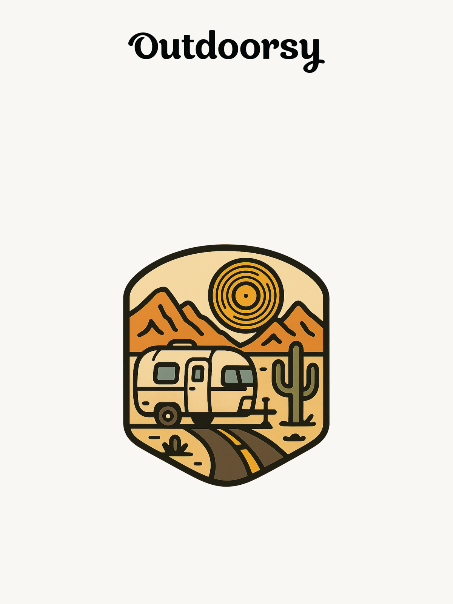
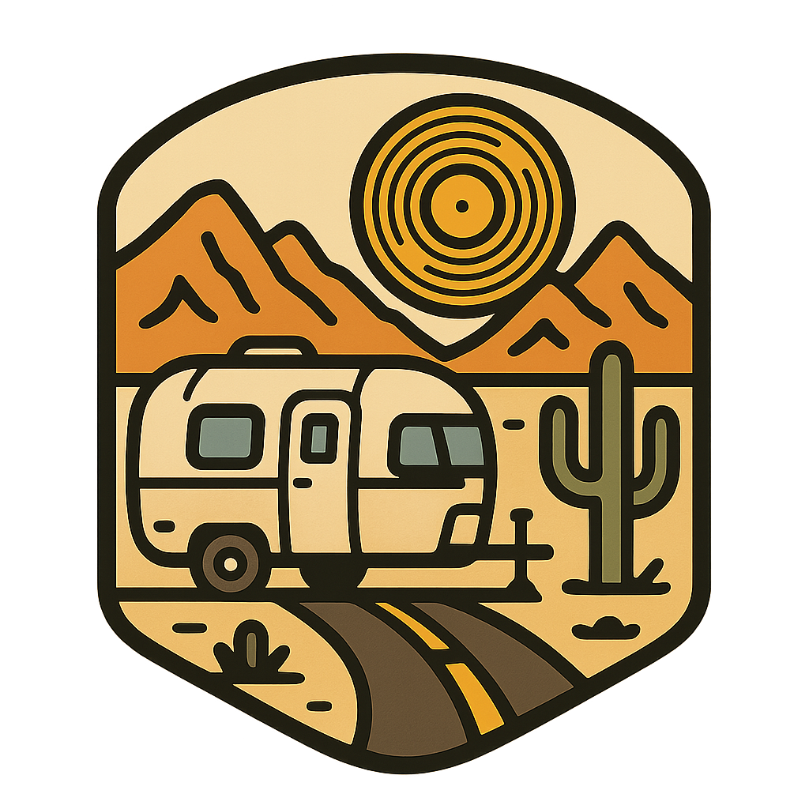
Direction 2 — Topo × Soundwave Mark
Premium outdoors feel; topographic lines become audio waveform. Clean, scalable.
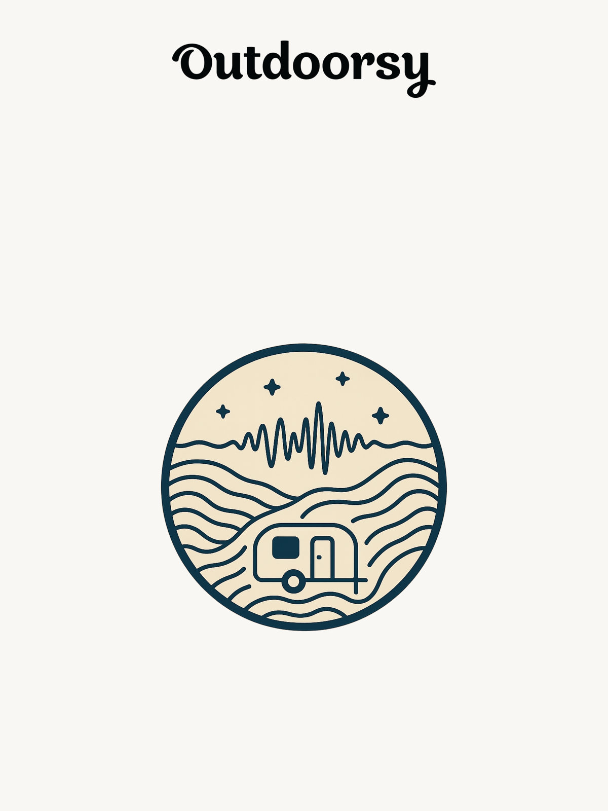
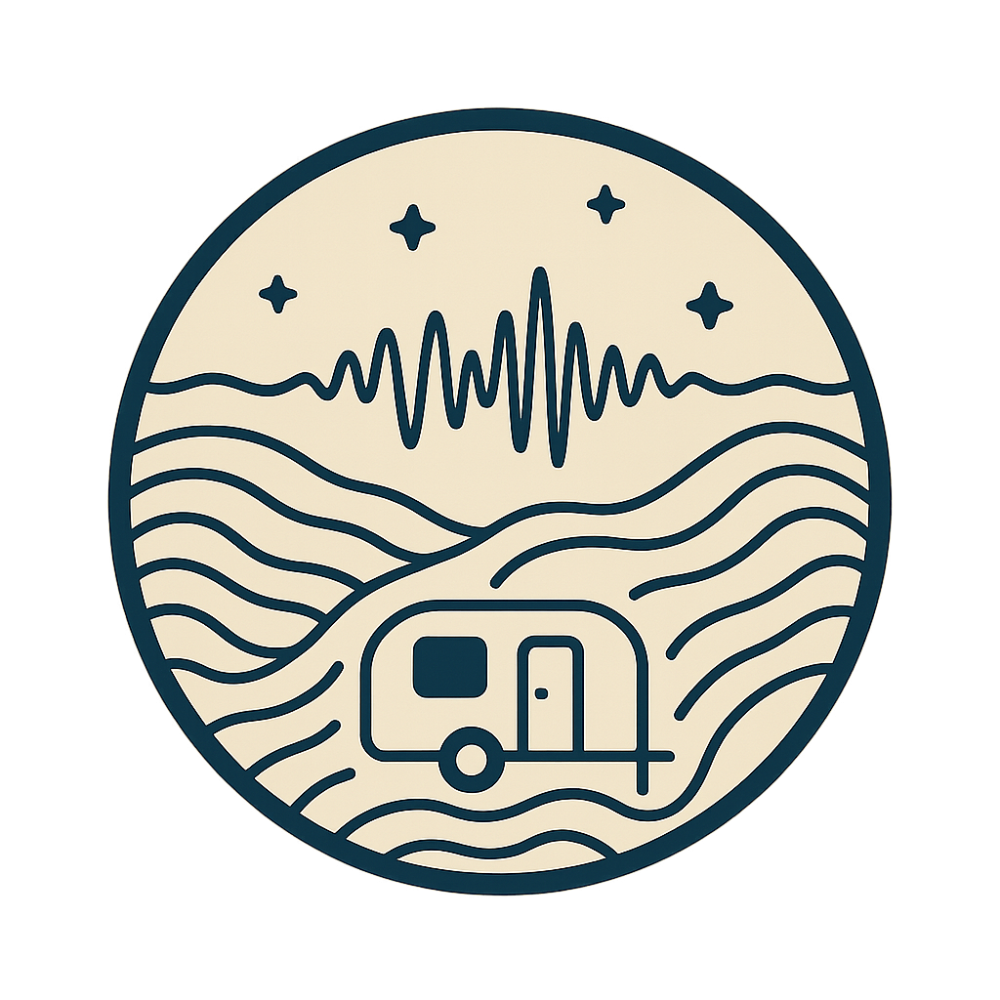
Direction 3 — Vintage Patch Mark
Classic patch silhouette with RV + Southwest elements. Great for embroidery.
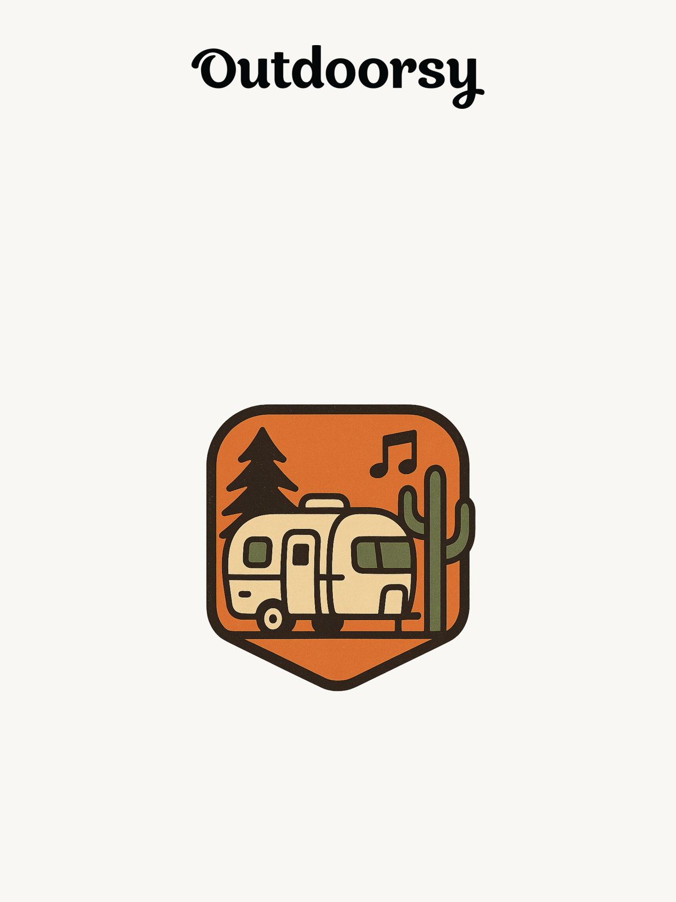
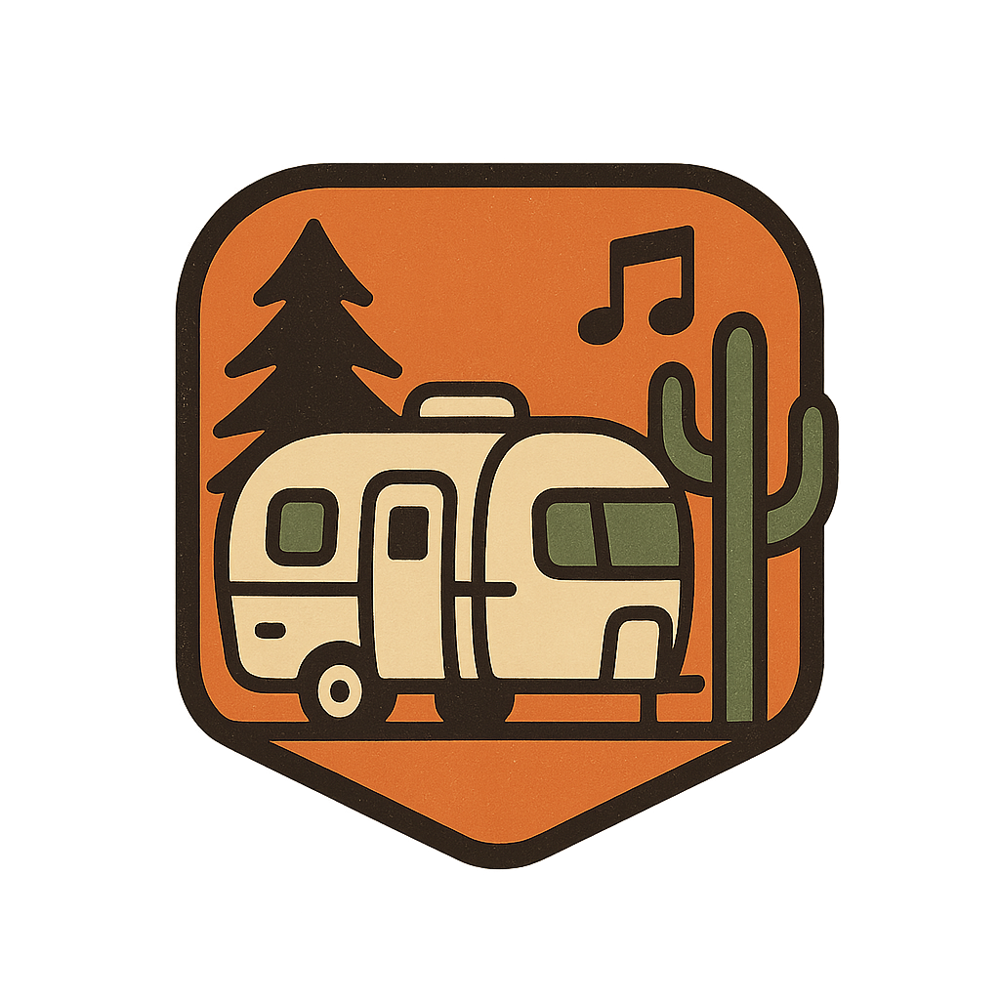
Direction 4 — Minimal Line Mark
Single‑color monoline mark (Airstream + music cues). Safest for hats.
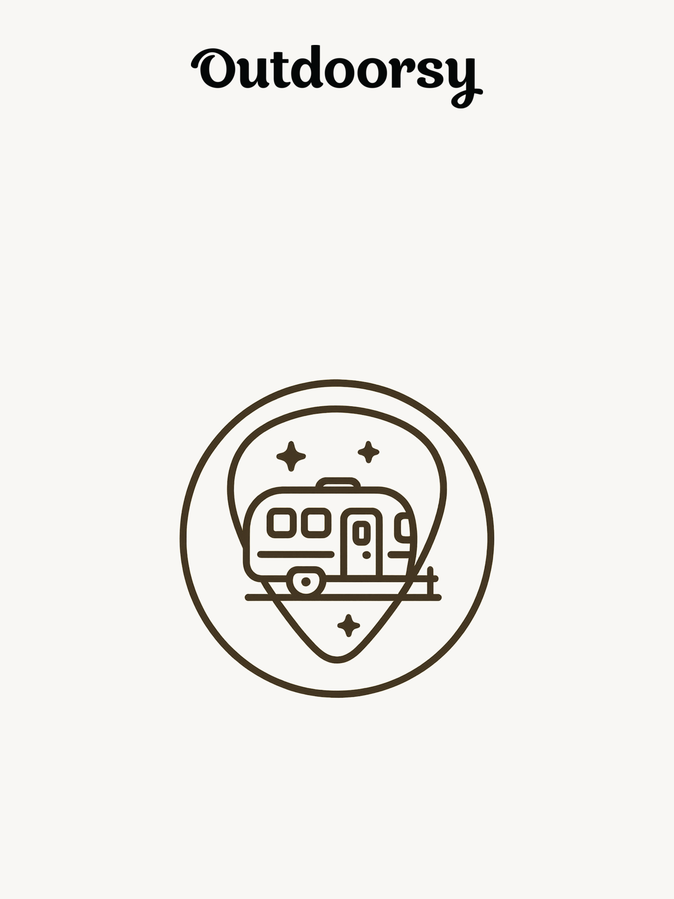
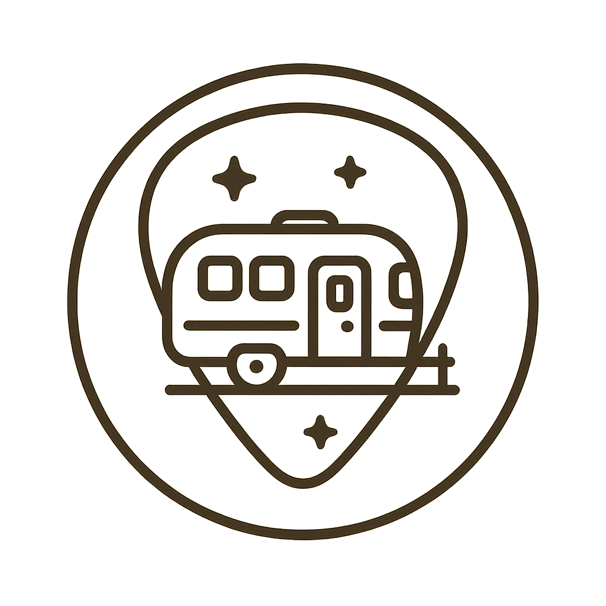
Direction 5 — Retro Collage Mark
Warm 70s Southwest emblem. Fun but still structured as a merch‑friendly mark.
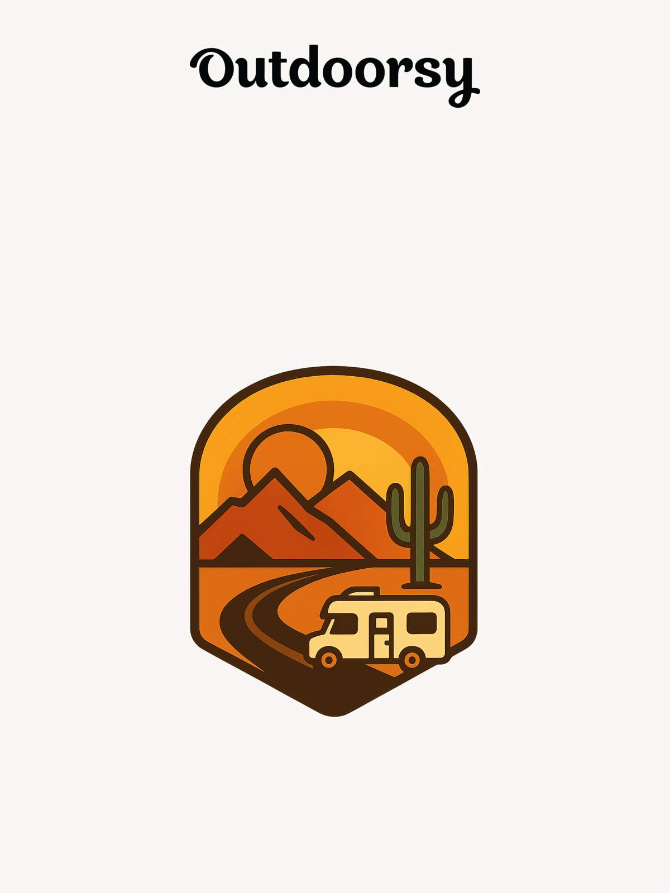
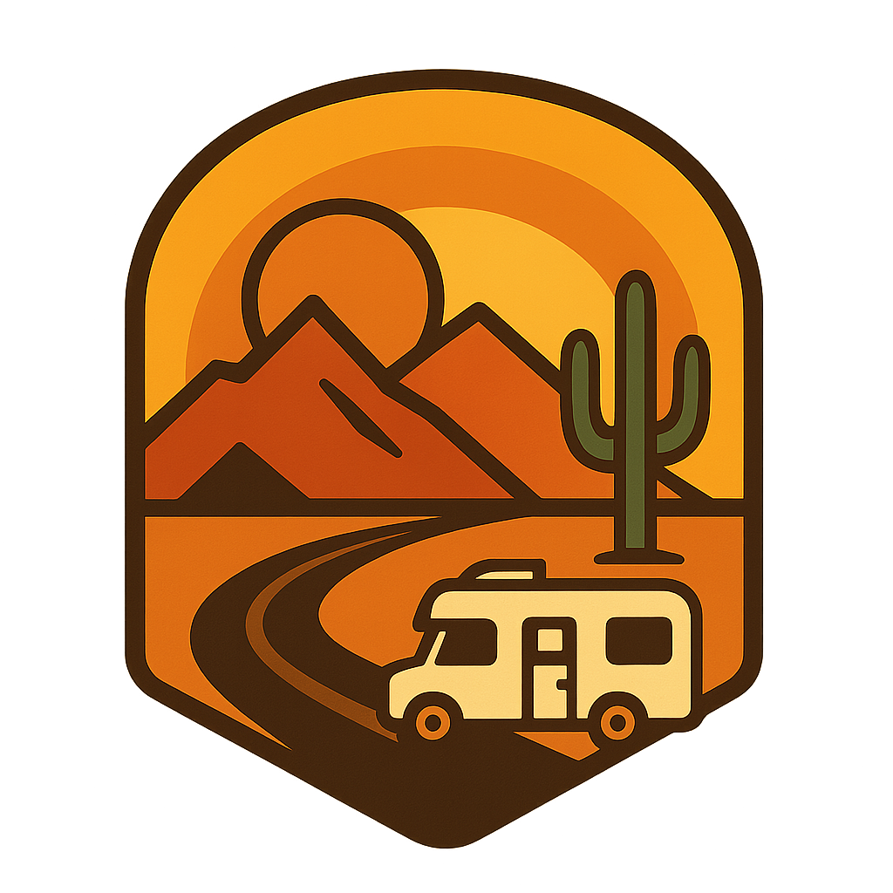
Direction 6 — Airstream × Vinyl Mark
Iconic RV silhouette tied to music. Simple and punchy for small print.
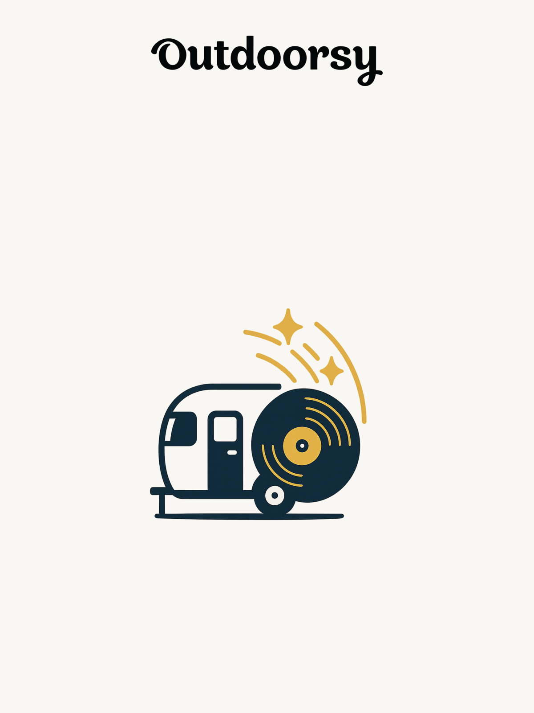
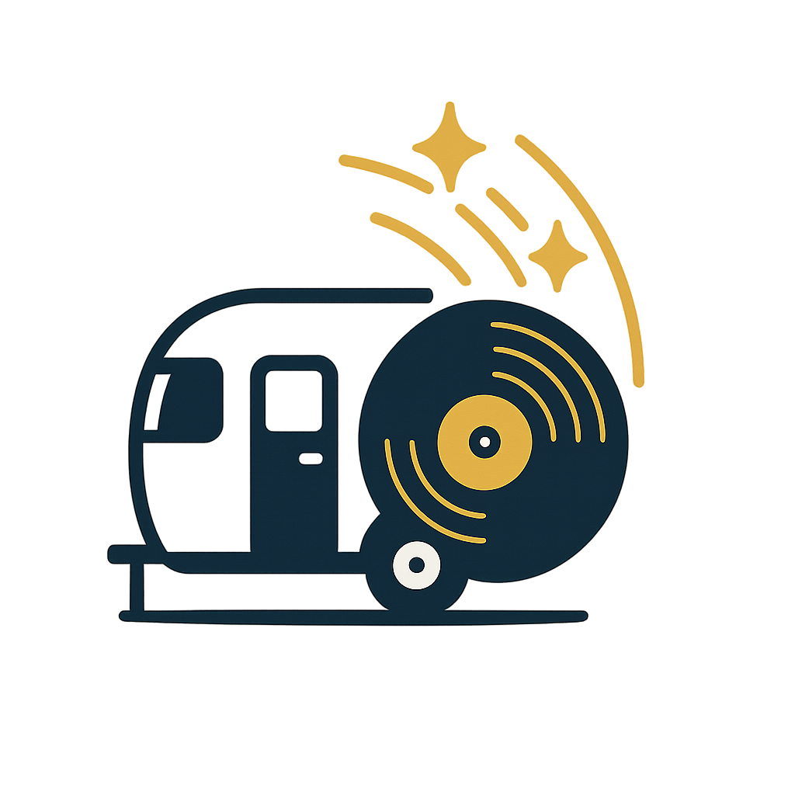
Recommendation
- Pick 2 directions to refine with Outdoor wordmark + SXSW lockup.
- Validate embroidery at hat scale; simplify to 1–2 colors if needed.
- Finalize a 1‑color embroidery version + 2–3 color print version.